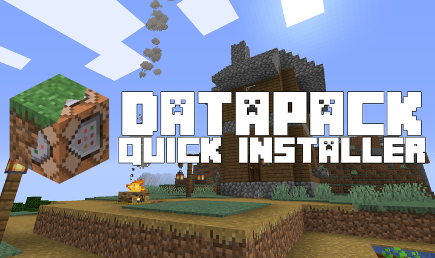
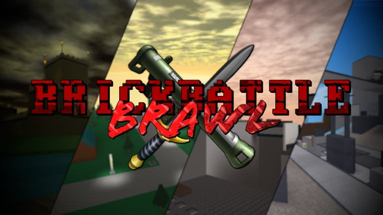

DATAPACK QUICK INSTALLER

The Datapack Quick Installer is a simple program for Minecraft that assists in quickly installing datapacks onto a save. All it requires from you is to select the world and the datapack. And once you do that, it'll automatically move the pack onto the world. It is also compatible with MultiMC, an alternative to the base Minecraft launcher.
The program was written in C# and made in Visual Studio 2017. It was made for my own personal usage, but I released it to the public because I felt like it.
DownloadTHE UNDEAD COMING
The Undead Coming is a ROBLOX game made by the indie dev group Triple A Batteries. I was one of the programmers for the project. I assisted with finishing the remake of the game by finishing up the weapon framework, the UI functionality, the datastore functionality, and fixing most of the bugs. While the source code to the game is private, you can play the game by clicking the link below (once it's done of course).
Play HereBRICKBATTLE BRAWL: LEGACY EDITION

Brickbattle Brawl: Legacy Edition is my first fully fledge game on ROBLOX. Originally published in 2017, Brickbattle Brawl attempted to modernize the Brickbattle genre by "fixing" up the old weapons and making it much more enjoyable to play. Sadly, it did not fully achieve what I originally envisioned for the game. And since I was still inexperienced with programming, I decided to shelve the project for awhile. Fastforward to 2020, I uncovered a really old build of the game. And to my surprise, it still works (though it suffers from the same gameplay issues).
Instead of letting the game collect "dust" on the shelf, I've decided to release the source code to this game! You can also play it under the Roblox group "Ethereal Stars".
Play Here | Source Code